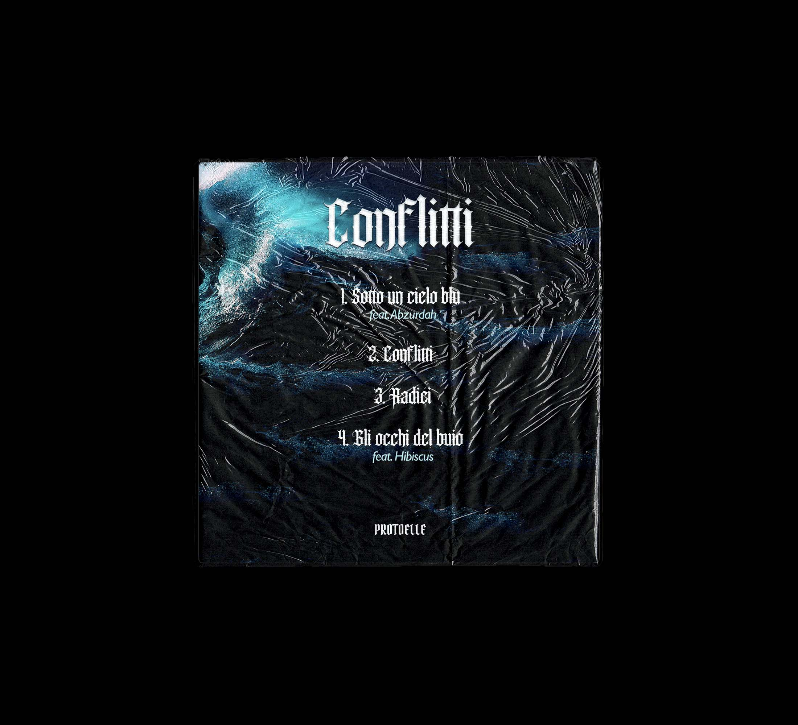
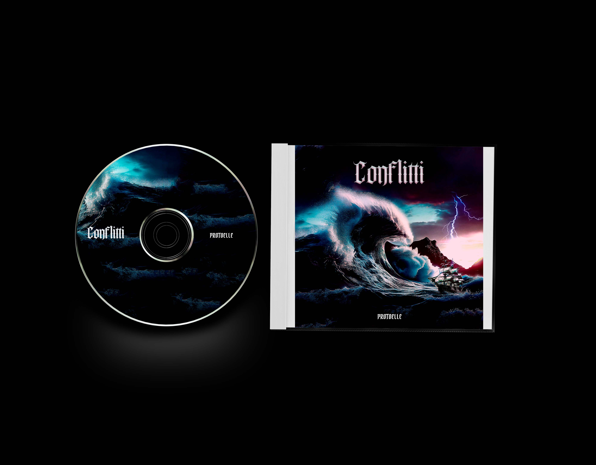
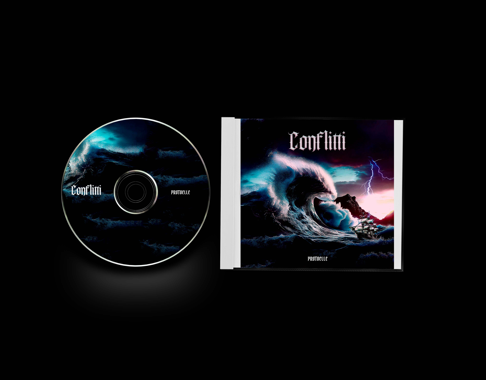
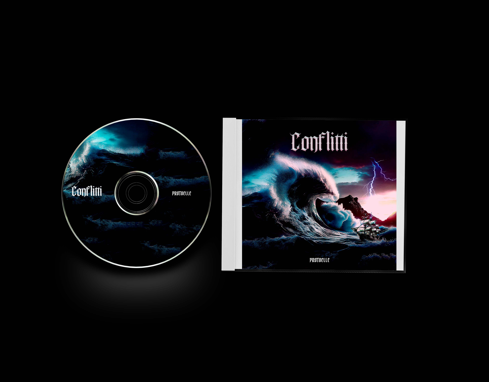

Portada album musical
Diseño artístico para la portada de un álbum conceptual.

Descripción
El reto consistió en diseñar la portada de un álbum musical que reflejara la esencia conceptual del proyecto: una mezcla entre sonidos urbanos y atmósferas oníricas.
Para lograrlo utilicé ilustración digital, texturas orgánicas y un estilo visual expresivo que conecta con la identidad del artista. La composición juega con el contraste entre formas geométricas y pinceladas libres, transmitiendo energía y creatividad.
Proceso Creativo

 

